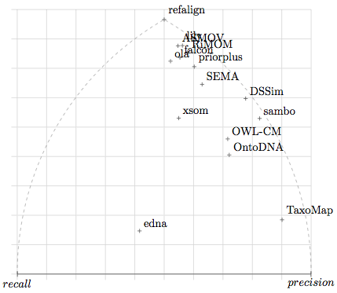
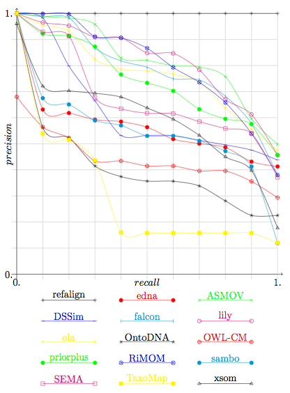

The goal of the benchmark tests is to provide a stable and detailed picture of each algorithm. For that purpose, the algorithms are run on systematically generated test cases.
Since the goal of these tests is to offer some kind of permanent benchmarks to be used by many, the test is an extension of the 2004 EON Ontology Alignment Contest, whose numbering it (almost) fully preserves. This year, no modification has been made since the last year benchmark suite.
13 systems participated in the benchmark track of this year's campaign.
The evaluation has been performed on the files provided by the participants (available here) which have been processed by the following script).
Table 1 provides the consolidated results, by groups of tests. We display the results of participants as well as those given by some simple edit distance algorithm on labels (edna). The computed values are real precision and recall and not an average of precision and recall.
These results show already that three systems are relatively ahead (ASMOV, Lily and RiMOM) with three close followers (Falcon, Prior+ and OLA2). No system had strictly lower performance than edna.
Each algorithm has its best score with the 1xx test series. There is no particular order between the two other series. Again, it is more interesting to look at the 2xx series structure to distinguish the strengths of algorithms.
The results have also been compared with the three measures proposed in [Ehrig 2005] (symmetric, effort-based and oriented). These are generalisation of precision and recall in order to better discriminate systems that slightly miss the target from those which are grossly wrong. The three measures provide the same results, so they have been displayed only once in Table 1 under the label "Ext". This is not really surprising given the proximity of these measures. As expected, they only improve over traditional precision and recall. Again, the new measures do not dramatically change the evaluation of the participating systems (all score are improved and the six leading systems are closer to each others). This indicates that the not immediately best systems (Falcon, OLA2) could certainly easily be corrected to reach the level of the best ones (RiMOM in particular). Since last year the implementation of the precision and recall evaluator has changed. As a consequence, a number of results which would have been rejected last year, and then corrected by the participants, were accepted this year. As a consequence, now, the extended precision and recall reject them: this concerns the systems marked with "Error".
| algo | refalign | edna | ASMOV | DSSim | falcon | lily | ola | OntoDNA | OWL-CM | priorplus | RiMOM | sambo | SEMA | TaxoMap | xsom | |||||||||||||||
|---|---|---|---|---|---|---|---|---|---|---|---|---|---|---|---|---|---|---|---|---|---|---|---|---|---|---|---|---|---|---|
| test | Prec. | Rec. | Prec. | Rec. | Prec. | Rec. | Prec. | Rec. | Prec. | Rec. | Prec. | Rec. | Prec. | Rec. | Prec. | Rec. | Prec. | Rec. | Prec. | Rec. | Prec. | Rec. | Prec. | Rec. | Prec. | Rec. | Prec. | Rec. | Prec. | Rec. |
| 1xx | 1.00 | 1.00 | 0.96 | 1.00 | 1.00 | 1.00 | 1.00 | 1.00 | 1.00 | 1.00 | 1.00 | 1.00 | 1.00 | 1.00 | 0.94 | 1.00 | 1.00 | 1.00 | 1.00 | 1.00 | 1.00 | 1.00 | 1.00 | 0.98 | 1.00 | 1.00 | 1.00 | 0.34 | 0.99 | 0.99 |
| 2xx | 1.00 | 1.00 | 0.40 | 0.55 | 0.95 | 0.90 | 0.99 | 0.60 | 0.92 | 0.85 | 0.97 | 0.89 | 0.91 | 0.86 | 0.80 | 0.43 | 0.82 | 0.51 | 0.92 | 0.79 | 0.97 | 0.86 | 0.98 | 0.51 | 0.92 | 0.72 | 0.91 | 0.19 | 0.73 | 0.67 |
| 3xx | 1.00 | 1.00 | 0.46 | 0.79 | 0.85 | 0.82 | 0.89 | 0.67 | 0.89 | 0.79 | 0.81 | 0.80 | 0.63 | 0.76 | 0.90 | 0.71 | 0.95 | 0.37 | 0.87 | 0.83 | 0.69 | 0.80 | 0.94 | 0.67 | 0.67 | 0.79 | 0.92 | 0.26 | 0.94 | 0.68 |
| H-mean | 1.00 | 1.00 | 0.44 | 0.60 | 0.95 | 0.90 | 0.98 | 0.64 | 0.92 | 0.86 | 0.96 | 0.89 | 0.89 | 0.87 | 0.83 | 0.49 | 0.85 | 0.54 | 0.93 | 0.81 | 0.95 | 0.87 | 0.98 | 0.56 | 0.90 | 0.74 | 0.92 | 0.21 | 0.76 | 0.70 |
| Ext | 1.00 | 1.00 | 0.59 | 0.80 | 0.97 | 0.92 | 0.99 | 0.64 | 0.96 | 0.89 | 0.97 | 0.90 | 0.93 | 0.90 | 0.96 | 0.84 | 0.96 | 0.87 | 0.93 | 0.77 | ||||||||||
These results and those displayed in Figure 1 single out a group of systems, ASMOV, Lily, Falcon 0.7, OLA2, Prior+ and RiMOM which seem to perform these tests at the highest level of quality. Of these, ASMOV, Lily and RiMOM seem to have slightly better results than the three others.

Figure 1: Each point expresses the position of a system with regard to precision and recall.
This year the apparently best algorithms provided their results with confidence measures. It is thus possible to draw precision/recall graphs in order to compare them.
We provide in Figure 2 the precision and recall graphs of this year. They are only relevant for the results of participants who provided confidence measures different of 1 or 0 (see the table in the Summary page). They also feature the results for edit distance on class names (edna) and the results of previous years (Falcon-2005 and RiMOM-2006). This graph has been drawn with only technical adaptation of the technique used in TREC. Moreover, due to lack of time, these graphs have been computed by averaging the graphs of each of the tests (instead to pure precision and recall).

Figure 2: Precision/recall graphs.
They cut the results given by the participants under a threshold necessary for achieving n% recall and
compute the corresponding precision. Systems for which these graphs are not meaningful
(because they did not provide graded confidence values) are drawn in dashed lines.
We remind the graphs for the best systems of the previous years, namely of Falcon in 2005 and RiMOM in 2006..
Like the two previous years there is a gap between these systems and their followers. The good news is that one system (OLA2) has achieved to fill this gap without significantly changing its strategy (Disclosure: the author of these lines is a member of the OLA2 team).
We have compared the results of this year's systems with the results of the previous years on the basis of 2004 tests, see Table 2. The results of three best systems (ASMOV, Lily and RiMOM) are comparable but never identical to the results provided in the previous years by RiMOM (2006) and Falcon (2005). Like Falcon last year, RiMOM provided this year lower results than last year. Figure 2 shows that RiMOM has increased in precision and decreased in overall performance. There seems to be a limit that systems are not able to overcome. At the moment, it seems that these systems are at a level at which making more progress is very hard: we now have strong arguments that having a 100% recall and precision on all these tests is not a reachable goal.
| Year | 2004 | 2005 | 2006 | 2007 | ||||||||||
|---|---|---|---|---|---|---|---|---|---|---|---|---|---|---|
| System | fujitsu | stanford | falcon | RiMOM | ASMOV | Lily | RiMOM | |||||||
| test | Prec. | Rec. | Prec. | Rec. | Prec. | Rec. | Prec. | Rec. | Prec. | Rec. | Prec. | Rec. | Prec. | Rec. |
| 1xx | 0.99 | 1.00 | 0.99 | 1.00 | 1.00 | 1.00 | 1.00 | 1.00 | 1.00 | 1.00 | 1.00 | 1.00 | 1.00 | 1.00 |
| 2xx | 0.93 | 0.84 | 0.98 | 0.72 | 0.98 | 0.97 | 1.00 | 0.98 | 0.99 | 0.99 | 1.00 | 0.98 | 1.00 | 0.97 |
| 3xx | 0.60 | 0.72 | 0.93 | 0.74 | 0.93 | 0.83 | 0.83 | 0.82 | 0.85 | 0.82 | 0.81 | 0.80 | 0.69 | 0.80 |
| H-means | 0.88 | 0.85 | 0.98 | 0.77 | 0.97 | 0.96 | 0.97 | 0.96 | 0.97 | 0.97 | 0.97 | 0.96 | 0.95 | 0.95 |
[Ehrig 2005] Marc Ehrig and Jérôme Euzenat. Relaxed precision and recall for ontology matching. In Ben Ashpole, Jérôme Euzenat, Marc Ehrig, and Heiner Stuckenschmidt, editors, Proc. K-Cap 2005 workshop on Integrating ontology, Banff (CA), pages 25-32, 2005.